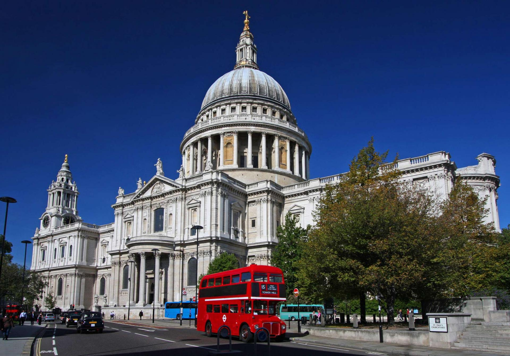

St. Paul's Cathedral
St. Paul's Cathedral is an Anglican temple, the residence of the Bishop of London. It's one of the most important sights of the British capital. The Cathedral was built on the highest point in the city, Lydgate Hill. It is located in the center of London. St. Paul's Cathedral is one of the largest churches in the world so it was the greatest work of Sir Christopher Wren. He had been building the Cathedral for 35 years, completed it in 1711. The Cathedral was built of white stone as well as many other buildings. But smoke and soot made its stones black and only the columns and edges were remained white because they were washed by rain. This is the reason why the building got its peculiar white-and-black look. Nowadays you can go on a tour there, but taking pictures and videos is prohibited!

Мы уже работаем над заданиями!